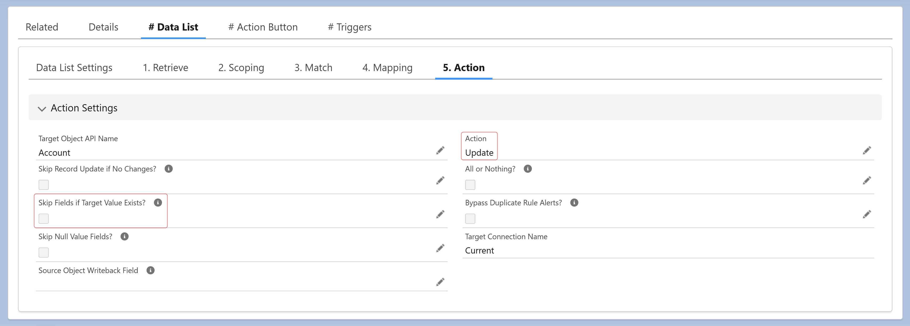

<section>
    <p>
      Yes, enable the <strong>"Skip Fields If Target Value Exists?"</strong> option. 
      This ensures that target fields with existing values remain unchanged 
      during the update process.
    </p>
  </section>
  
  